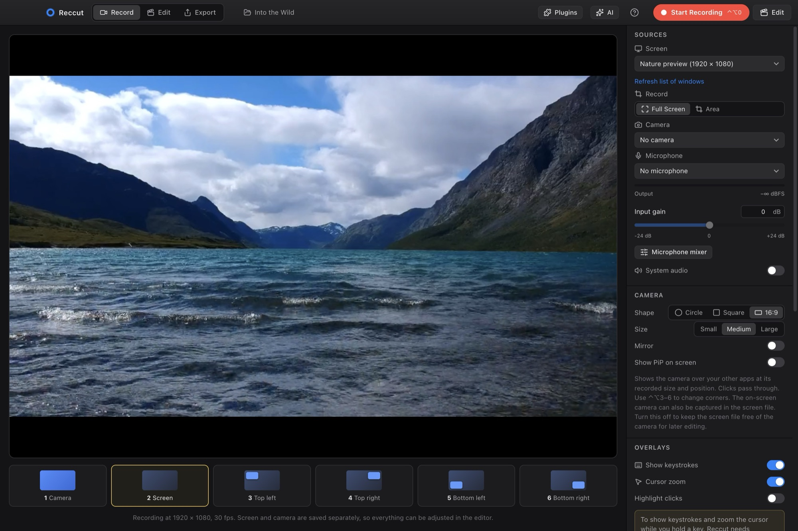

Reccut is the all-in-one video studio. Capture your screen and camera, cut on a magnetic timeline, grade like film and export to any format. One app, no subscription, no internet needed.
Animated titles and lower thirds, ready the moment you drop them on the timeline. Type, drag them into place, done.
 Title
Title Lower third
Lower thirdMore than 40 film looks, from Kodak Portra to Technicolor, on top of a full 16-bit GPU colour grade with colour wheels, LOG conversion and LUTs.

 OriginalTechnicolor three-strip
OriginalTechnicolor three-strip


Real frames from the demo project, graded with Reccut's built-in looks.
A magnetic main storyline with connected titles above and music below. If you've used Final Cut Pro or Premiere, you'll feel at home right away.

Screen and camera are stored separately, together with your layout, cursor and keystrokes. Change all of it afterwards in the editor.

YouTube, Shorts, Reels, TikTok or the big screen. Reframe, resize and pick a format, or let a preset do it.
 YouTube16:9 · up to 4K
YouTube16:9 · up to 4K Shorts · Reels · TikTok9:16
Shorts · Reels · TikTok9:16 Instagram1:1 · 4:5
Instagram1:1 · 4:5Batch-convert files without opening the editor. Subtitles burned in, as a track or as SRT/VTT.
The agent reads your project, edits with the same tools you use, checks the result and tells you what it did. Every change can be undone.
Works with OpenAI, Claude, Gemini, Mistral and OpenRouter, or fully local with Ollama and LM Studio.
ProRes, DNxHR, 10-bit HEVC, AVCHD, image sequences, camera RAW and HDR.
Noise reduction, hum removal, EQ, compressor and 30+ presets like Podcast Voice.
Smooth speed ramps from 10% to 20×, and stabilization that tracks hundreds of points.
Import PSD and SVG files as separate, stacked layers ready to animate.
Pixelate or blur faces, passwords and number plates, and follow them with keyframes.
Design lower thirds in After Effects and bring them in with the template kit.
Saved after every change, with snapshots going back months.
Extend Reccut with plugins, or let the AI agent write one for you.
Reccut is free under the MIT licence. No account, no watermark, no telemetry. It works fully offline and only checks GitHub for updates, which you can turn off.
# Build from source (Node 22+) $ git clone https://github.com/sirbull/OBSlite.git $ cd OBSlite $ npm install $ npm start # Installers for Mac and Windows $ npm run dist